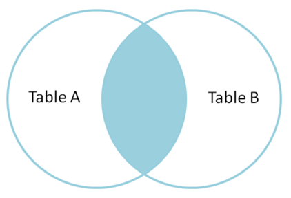
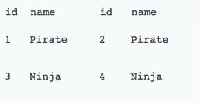
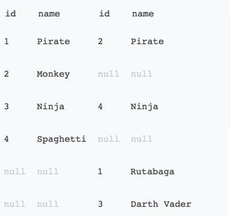
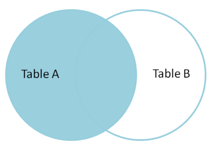
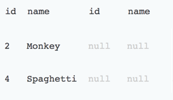
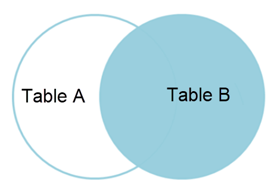
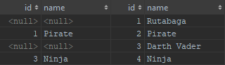

CTO Lecture Series
SQL 101
How to combine data
Recap
- Last time we learned how to a bunch of small things.
- We learned how to order results.
- We learned how to stick results together vertically.
- We learned how to do use case statements.
Order by
SELECT Name
, Year(Date) year
, CASE WHEN Max([Maximum Wind]) > 110 THEN 'Major' ELSE 'Not Major' END major
FROM atlantic
GROUP BY Name, Year(Date)
ORDER BY year DESC, major, name ASCUnion
SELECT Year(Date) year FROM atlantic
GROUP BY Year(Date) HAVING Max([Maximum Wind]) > 150
UNION
SELECT Year(Date) year FROM pacific
GROUP BY Year(Date) HAVING Max([Maximum Wind]) > 150Case
SELECT Year(Date) year, Name,
CASE
WHEN MIN([Minimum Pressure]) < 950 THEN
'Low'
ELSE
'Normal'
END pressure
FROM atlantic
GROUP BY YEAR(Date), Name
ORDER BY year DESC
Logging in
Joins
Used to join tables horizontally.
Sample Data

Inner Join
Used to get the results only in both tables
Inner join
Example
SELECT * FROM table_a A
INNER JOIN table_b B
ON A.name = B.nameInner Join
Full Outer Join
Used to get the results that exist in either side.

Inner join
Example
SELECT * FROM table_a A
FULL OUTER JOIN table_b B
ON A.name = B.nameInner Join
Left Join
Used to get the results in the left table
Left join
Example
SELECT * FROM table_a A
LEFT OUTER JOIN table_b B
ON A.name = B.nameLeft Join

Filtered Left Join
Used to get the results only in left table

Filtered Left join
Example
SELECT * FROM table_a A
LEFT OUTER JOIN table_b B
ON A.name = B.name
WHERE B.id IS nullFiltered Left Join
Right Join
Used to get the results in the right table
Right join
Example
SELECT * FROM table_a A
RighT OUTER JOIN table_b B
ON A.name = B.nameRIght Join
Filtered Right Join
Used to get the results only in right table

Filtered Right join
Example
SELECT * FROM table_a A
RIGHT OUTER JOIN table_b B
ON A.name = B.name
WHERE A.id IS nullFiltered Right Join

Filtered Full OUter Join
Used to get the results only in one table

Filtered Full Outer Join
Example
SELECT * FROM table_a A
FULL OUTER JOIN table_b B
ON A.name = B.name
WHERE A.id IS null
OR B.id IS nullFiltered Outer Join

Cross Join
Used to get every row in each table paired with every row in the other table.
There is no good venn diagram analogy for this.
Cross join
Example
SELECT * FROM table_a A
CROSS JOIN table_b BCross Join

Exercises
New Tables
Exercise 1
Find a list of all the air lines which fly to Bermuda.
SELECT Distinct(A.alias)
FROM routes R
INNER JOIN airlines A
ON A.airline_id = R.airline_id
WHERE to_airport = 'BDA'Exercise 2
Find a list of all the air lines which fly to Bermuda and don't operate a code share.
SELECT Distinct(A.alias)
FROM routes R
INNER JOIN airlines A
ON A.airline_id = R.airline_id
WHERE to_airport = 'BDA'
AND codeshare IS NULLExercise 3
How many airports can you get to from Bermuda with one change.
SELECT COUNT(DISTINCT(B.to_airport_id)) count
FROM routes A INNER JOIN routes B
ON A.to_airport_id = B.from_airport_id
WHERE A.from_airport = 'BDA'
Exercise 4
How many airports can you get to from Bermuda with one change of plane and no change of airline.
SELECT COUNT(DISTINCT(B.to_airport_id)) count
FROM routes A INNER JOIN routes B
ON A.to_airport_id = B.from_airport_id
AND A.airline_id = B.airline_id
WHERE A.from_airport = 'BDA'
Exercise 5
Create a list of countries and the number of different airports you can get to in each one, with one change of plane on no change of airline.
SELECT country, count(*) count FROM (SELECT DISTINCT C.* FROM routes A INNER JOIN routes B
ON A.to_airport_id = B.from_airport_id AND A.airline_id = B.airline_id
INNER JOIN airports C ON C.airport_id = B.to_airport_id
WHERE A.from_airport = 'BDA') AS X
GROUP BY country
ORDER BY count desc
Exercise 6
How many different type of plane fly to Bermuda.
SELECT COUNT(DISTINCT(plane_iata)) count
FROM routes R
INNER JOIN plane_routes P
ON P.route_id = R.route_id
WHERE R.from_airport = 'BDA'Exercise 7
Get a list of the names of the planes that fly to Bermuda
SELECT DISTINCT A.name
FROM routes R
INNER JOIN plane_routes P ON P.route_id = R.route_id
INNER JOIN planes A ON A.iata = plane_iata
WHERE R.from_airport = 'BDA'Exercise 8
Each record in the table department represents a department which might hire some employees. Each record in the table employee represents an employee who works for one of the departments from the table department. The salary of each employee is known. (However, the locations of the departments are not relevant here.)
Write an SQL query that returns a table comprising all the departments (dept_id) in the table department that hire at least one employee, the number of people they employ and the sum of salaries in each department. The table should be ordered by dept_id (in increasing order)
SELECT dept_id, count(*) count,
sum(salary) sum_of_salary
FROM employee
GROUP BY dept_idExercise 9
Each record in the table department represents a department which might hire some employees. Each record in the table employee represents an employee who works for one of the departments from the table department. The salary of each employee is known. (However, the locations of the departments are not relevant here.)
Write an SQL query that returns a table comprising all the departments (dept_id) in the table department, the number of people they employ and the sum of salaries in each department. The table should be ordered by dept_id (in increasing order)
SELECT d.dept_id, count(e.dept_id) count,
coalesce(sum(salary),0) sum_of_salary
FROM department d
LEFT JOIN employee E ON d.dept_id = e.dept_id
GROUP BY d.dept_id
Exercise 10
You would like to compute the total number of tickets sold for each movie. Then you would like to rank all movies by popularity.
Write an SQL query that returns a popularity ranking of all movies described in any row of the table movies. For each movie you should provide its id and title and the total number of tickets sold for it (sold_tickets). The table should be ordered by its sold_tickets column (in decreasing order). In case of a tie, order the rows by the id column (in increasing order).
SELECT M.id, M.title,
COALESCE(SUM(R.number_of_tickets), 0) AS sold_tickets
FROM movies M
LEFT JOIN reservations R
ON M.id = R.movie_id
GROUP BY M.id, M.title
ORDER BY sold_tickets DESC, id